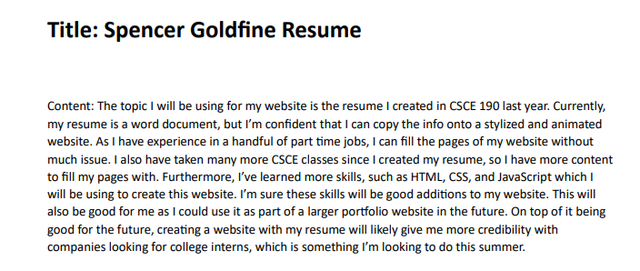
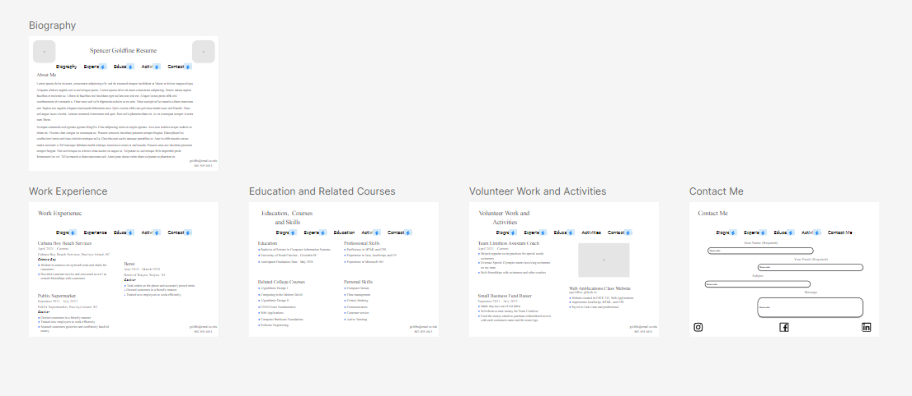
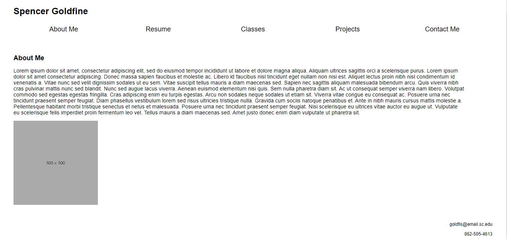

This is the first part of my CSCE 242 semester project in which I picked the topic I would be making my website on.

This is the second part of my CSCE 242 semester project in which I made a wireframe version of my website.

This is the third part of my CSCE 242 semester project in which I perfected my wireframe and created an HTML and CSS version.
This is the fourth part of my CSCE 242 semester project in which I stylized the website I created in part three.